기계정비산업기사 (2010-03-07 기출문제)
1과목: 공유압 및 자동화시스템
1. 다음 회로의 명칭으로 적합한 것은?
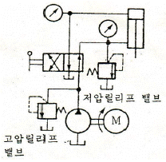
- 최대압력 제한 회로
- 블리드 오프 회로
- 무부하 회로
- 증압 회로
(정답률: 76%)

2. 보기에는 공기압 실린더의 호칭 방법에서 LB가 뜻하는 것은?
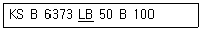
- 패킹의 재질
- 지지 형식
- 큐션의 형식
- 규격 형태
(정답률: 78%)
3. 수평 원관 속을 흐르는 유체에 대한 다음 설명 중 옳은 것은? (단 에너지 손실은 없다고 가정한다.)
- 유체의 압력과 유체의 속도는 제곱특성에 비례한다.
- 유체의 속도는 압력과의 관계가 없다.
- 유체의 속도는 압력에 비례한다.
- 유체의 속도가 빠르면 압력이 낮아진다.
(정답률: 64%)
4. 유압 모터 중 가장 간단하며 출력 토크가 일정하고 정역회전이 가능하며 토크 효율이 약 75~85%, 전 효율은 약 80% 정도이고 최저 회전수는 150rpm으로 정밀 서보 기구에는 부적합한 모터는?
- 베인 모터
- 기어 모터
- 액시얼 피스톤 모터
- 레디얼 피스톤 모터
(정답률: 84%)
5. 작은 지름의 파이프에서 유량을 미세하게 조정하기에 적합한 밸브는?
- 니들밸브
- 체크 밸브
- 셔틀 밸브
- 소켓 밸브
(정답률: 79%)
6. 서보유압밸브의 특징으로 볼 수 없는 것은?
- 소형으로써 대 출력을 얻을 수 있다.
- 빠른 응답성을 가지고 있다.
- 작동기와 부하장치를 보호하는 효과가 있다.
- 소형으로 써 가격이 저렴하다
(정답률: 69%)
7. 회로 설계를 하고자 할 때 부가조건의 설명이 잘못된 것은 어느 것인가?
- 리셋(reset): 리셋 신호가 입력되면 모든 작동 상태는 초기 위치가 된다.
- 비상정지(emergency) : 비상정지신호가 입력되면 대부분의 경우 전기제어 시스템에서는 전원이 차단되나 공압 시스템에서는 모든 작업요소가 원위치 된다.
- 단속 사이클(single cycle) : 각 제어 요소들을 임의의 순서대로 작동 시킬 수 있다.
- 정지(stop) : 연속 사이클에서 정지신호가 입력되면 마지막 단계까지는 작업을 수행하고 새로운 작업을 시작하지 못한다.
(정답률: 68%)
8. 스트레이너는 어느 위치에 설치하는가?
- 유압 실린더와 방향제어밸브 사이
- 방향제어밸브의 복귀 포트
- 유압 펌프의 흡입관
- 유압 모터와 방향제어밸브 사이
(정답률: 76%)
9. 공기 저장 탱크의 기능 중 잘못된 것은?
- 저장 기능
- 냉각효과에 의한 수분 공급
- 공기압력의 맥동을 없앰
- 압력변화를 최소화
(정답률: 81%)
10. 유압기기중 회로압이 설정압을 초과하면 유체압에 의하여 파열되어 압유를 탱크로 귀환시키고 동시에 압력상승을 막아 기기를 보호하는 역할을 하는 기기는?
- 압력 스위치
- 유체 퓨즈
- 체크 밸브
- 릴리프 밸브
(정답률: 73%)
11. 제어와 자동제어의 선택조건에서 제어 시스템의 선택조건에 해당되지 않는 것은?
- 외란 변수에 의한 영향이 무시할 정도로 작을 때
- 특징과 영향을 확실히 알고 있는 하나의 외란변수만 존재할 때
- 외란 변수의 변화가 아주 작을 때
- 여러 개의 외란 변수가 존재할 때
(정답률: 71%)
12. 공압 실린더 취급 시 주의 사항으로 잘못된 것은?
- 로드선단과 연결부에 자유도가 없도록 한다.
- 작업 환경의 주위 온도는 5~60℃가. 적당하다.
- 피스톤 로드는 가로 하중과 굽힘 모멘트가 걸리지 않도록 고려하여야 한다.
- 부하의 운동방식과 실린더 위 작동방향이 추종하도록 한다.
(정답률: 64%)
13. 전동기 구동동력이 부족할 때 발생하는 현상은?
- 실린더 추력이 감소된다.
- 작동유가 과열된다.
- 토출 유량이 많아진다.
- 유압유의 점도가 높아진다.
(정답률: 80%)
14. 다음 그림의 아라고(Arago)의 회전 원판 실험과 같이 비자성체인 알류미늄 혹은 구리로 만들어진 원판위에서 영구 자석을 회전시키면 원판도 자석의 방향으로 함께 회전하는 원리를 이용한 전동기는?
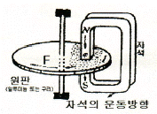
- 유도 전동기
- 직류전동기
- 스테핑 전동기
- 선형전동기
(정답률: 81%)
15. 출력측의 한쪽을 부하와 연결하고 다른 쪽 단자 (공통단자)를 0V에 접지시키는 센서는?(단, 센서작동시 + 전압 출력됨)
- NP형
- PN형
- NPN형
- PNP형
(정답률: 70%)
16. 공압 액추에이터 중 회전각도의 범위가 가장 큰 것은?
- 스크루형
- 크랭크형
- 베인형
- 래크와 피니언형
(정답률: 84%)
17. 신뢰성으로 설비를 설명할 때의 편리한 점이 아닌 것은?
- 설비의 수명 예측 가능
- 운전 조업 중인 설비의 장래 상황 예측 가능
- 작업자의 능력 예측 가능
- 사용시간과 고장 발생과의 관계 예측 가능
(정답률: 84%)
18. 자동 제어 시스템의 피드백(feedback)에 대한 설명 중 틀린 것은?
- 목표값과 실제값을 비교한다.
- 피드백 제어는 정성적 제어이다.
- 설계가 복잡하고 제작비용이 비싸진다.
- 피드백을 하면 외란이나 잡음 신호의 영향을 줄일 수 있다.
(정답률: 63%)
19. 다음의 메모리 중에서 사용자가 1번에 한하여 써 넣을 수(write) 있는 것은?
- EAROM
- PROM
- EPROM
- EEROM
(정답률: 74%)
20. 공장 자동화가 확장됨에 따라 릴레이제어(유접점)에서 전자제어(무접점)로 전환되어 가는 주된 원인은?
- 작업환경의 개선
- 품질의 고급화
- 부품수명과 동작시간
- 노동력의 감소
(정답률: 62%)
2과목: 설비진단관리 및 기계정비
21. 조업시간을 올바르게 표현한 것은?
- 부하시간 +무부하시간 +기타시간
- 부하시간 +정미가동시간 +정지시간 +기타시간
- 정미가동시간 +무부하시간 +기타시간
- 부하시간 +정지시간 +무부하시간 +기타시간
(정답률: 55%)
22. 보전작업계획은 연간,월간,주간,개별 설비보전 계획을 수립한다.이중 연간 보전 계획 항목이 아닌 것은?
- 조업계획,설비능력 및 가동시간 계획
- 보전작업 및 설비표준의 개량
- 분해 검사 및 외주 계획
- 작업량에 의한 설비가동 시간 계획
(정답률: 49%)
23. 강철 시스템의 고유진동수와 차단기의 정적변위와의 관계가 옳은 것은?
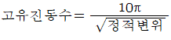
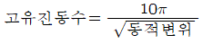
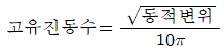
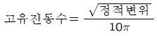
(정답률: 67%)
24. 롤링 베어링에 발생하는 진동의 종류가 아닌 것은?
- 다듬면의 굴곡에 의한 진동
- 베어링 구조에 기인하는 진동
- 베어링의 손상에 의한 진동
- 베어링 선형성에 의한 진동
(정답률: 71%)
25. 설비투자의 합리적인 투자 결정에 필요한 경제성 평가방법이 아닌 것은?
- 자본회수법
- 비용비교법
- MAPI법
- 처분가치법
(정답률: 74%)
26. 다음과 같은 가속도계의 설치 방법중 가장 높은 주파수 응답 범위를 얻을 수 있는 것은?
- 손 고정
- 나사 고정
- 접착제 고정
- 자석 고정
(정답률: 78%)
27. 생산의 3요소가 아닌 것은?
- 사람(Man)
- 자본(Capital)
- 설비(Machine)
- 재료(Material)
(정답률: 78%)
28. 윤활유에 관한 설명 중 올바르지 않은 것은?
- 윤활유의 비중은 성능에는 관계없고 물과 비교한 무게비이다.
- 절대점도는 동점도를 윤활유의 밀도로 나눈값을 나타낸다.
- 윤활유의 온도를 낮추게 되면 유동성이 없어지고 응고되며 유동성을 잃기 직전의 온도를 유동점이라고 한다.
- 점도는 윤활유의 기본이 되는 성질이며 점도의 단위로는 절대점도와 동점도 단위를 사용한다.
(정답률: 57%)
29. 제품에 대한 전형적인 고장률 패턴은 욕조곡선으로 나타낼 수 있다.욕조곡선은 크게 초기고장기간.우발고장기간 그리고 마모고장기간으로 구분된다.다음 중 우발고장기간에 발생될 수 있는 원인과 관계가 없는 것은?
- 안전계수가 낮은 경우
- 스트레스가 기대 이상인 경우
- 사용자 과오가 발생한 경우
- 디버깅 중에 발견된 고장이 발생된 경우
(정답률: 78%)
30. 소리(음)가 서로 다른 매질은 통과할 때 구부러지는 현상은?
- 음의 반사.
- 음의 간섭
- 음의 굴절
- 마스킹(Marking)효과
(정답률: 86%)
31. 컴퓨터를 이용한 설비 배치기법이 아닌 것은?
- PERT/CPM
- CRAFT
- CORELAP
- ALDEP
(정답률: 68%)
32. 최소의 비용으로 최대의 설비효율을 얻기 위하여 고장분석을 실시한다.고장분석을 행하는 이유가 아닌 것은?
- 설비의 고장을 없애고 신뢰성을 향상시키기 위하여
- 설비의 고장에 의한 휴지시간을 단축시켜 보전성을 향상시키기 위하여
- 설비의 보수비용을 늘려 경제성을 향상시키기 위하여
- 설비의 가동시간을 늘리고 열화고장을 방지하기 위하여
(정답률: 79%)
33. 설비관리기능은 일반관리기능,기술기능,실시기능 및 지원기능으로 분류할 때 보전업무에서 현 설비나 잠재적인 설계, 설계의 향상 및 설비구매에 대한 의사결정의기반이 되는 기능으로서 이러한 기술 기능에 해당되지 않는 것은?
- 설비성능 분석
- 고장 분석 방법 개발 및 실시
- 설비진단기술 이전 및 개발
- 주유,조정 그리고 수리업무 등의 준비 및 실시
(정답률: 67%)
34. 부문보전과 집중보전을 조합시킨 절충형 보전에 대한 장단점으로 잘못된 것은?
- 집중 그룹의기동성에 대한 장점
- 집중 그룹의 보행손실에 대한 단점
- 지역 그룹의 운전과의 일체감에 대한 장점
- 지역 그룹의 노동효율에 대한 장점
(정답률: 49%)
35. 부품은 고장률을 알면 보전에 의하여 제품의 수명을 연장 시킬 수 있다.다음 중 부품을 사전교환 등에 의한 예방보전(preventivemaintenance)을 실시하여 제품의 수명을 연장시키기에 가장 합당한 고장률의 유형은 무엇인가?
- 감소형(decreasingfailurerate)
- 증가형(increasingfailurerate)
- 일정형(constantfailurerate)
- 램덤형(randomfailurerate)
(정답률: 64%)
36. TPM(totalproductivemaintenance)의 활동으로 볼 수 없는 것은?
- 설비의 효율화를 위한 개선활동
- 작업자의 자주보전체제의 확립
- 계획보전체제의 확립
- 사후보전(BM:BreakdownMaintenance)설계와 초기유동관리 체제의 확립
(정답률: 70%)
37. 설비의 진단 기술 중 진동 진단 기술로 알 수 있는 것은?
- 펌프 축의 불평형
- 윤활유의 열화
- 전력 케이블의 절연 상태
- 균열 및 부식 진단
(정답률: 68%)
38. 미끄럼 베어링에 그리스를 사용할 경우 고려하지 않아도 될 사항은?
- 온도
- 하중
- 재질
- 용도
(정답률: 56%)
39. 설비관이에 있어서 TPM은 여러 가지 측면에서 전통적인 관리시스템과 차이가 있다.다음 중 TPM관리와 가장 거리가 먼,즉 전통적 관리 개념은 어떤 것인가?
- 원인추구 시스템
- 현장에서 사실에 입각한 관리
- 문제가 발생한 후 해결하려는 접근방식
- 로스(loss)측정
(정답률: 73%)
40. 주파수,진폭 및 위상이 같은 두 진동이 합성되면 어떠한 진동 형태로 되는가?
- 주파수와 진폭은 변하지 않고 위상이 변한다.
- 진폭과 위상은 변동이 없고 주파수만 두 배로 증가한다.
- 주파수,진폭 및 위상이 두 배로 증가한다.
- 주파수와 위상은 변동이 없고 진폭만 두 배로 증가한다.
(정답률: 67%)
3과목: 공업계측 및 전기전자제어
41. 계전기의 기호 중 과전류 계전기의 문자 기호는?
- R
- OVR
- OCR
- GR
(정답률: 60%)
42. 접지에 의하여 노이즈를 개선할 때의 주의할 점으로 맞는 것은?
- 1점으로 접지한다.
- 가능한 가는 선을 이용한다.
- 직렬배선을 한다.
- 실드피복은 접지하지 않는다.
(정답률: 60%)
43. 30[V]의 기전력으로 300[C]의 전기량이 이동할 때 몇 [J]의 일을 하게 되는가?
- 10[J]
- 600[J]
- 9000[J]
- 15000[J]
(정답률: 76%)
44. 계측계의 동작 특성 중 다음 그림과 같이 시간지연에 의해 임의의 순간에 입력신호값과 출력신호값의 차(E)가 발생하는 동특성은? (단, I:입력신호, M:출력신호)
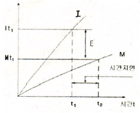
- 시간지연과 동오차
- 시간지연과 정오차
- 히스테리시스 오차
- 입출력신호의 직선성
(정답률: 61%)
45. 제어량을 검출하고 기준 입력신호와 비교시키는 피드백 제어의 구성요소는?
- 조작부
- 검출부
- 조작량
- 명령처리부
(정답률: 62%)
46. 측온 저항온도계에서 사용하는 금속 저항체가 아닌 것은?
- 백금
- 니켈
- 안티몬
- 구리
(정답률: 68%)
47. 아래 그림과 같은 연산증폭기의 기본 회로는?
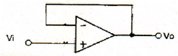
- 반전 증폭기
- 비반전 증폭기
- 전압 플로워
- 차동 증폭기
(정답률: 59%)
48. 다음 시퀀스 회로를 논리식으로 나타낸 것은?
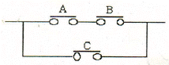
- AㆍBㆍC
- (AㆍB)+C
- Aㆍ(B+C)
- (A+B)ㆍC
(정답률: 74%)
49. 제어밸브에서 사용되는 구동부의 종류가 아닌 것은?
- 공기압 작동식 구동부
- 전동식 구동부
- 기계식 구동부
- 유압식 구동부
(정답률: 54%)
50. 도선에 흐르는 교류전류를 측정하기 위한 계기는?
- 절연 저항계(메거)
- 클램프 미터(혹 온 미터)
- 회로 시험기
- 접지 저항계
(정답률: 55%)
51. 회전방향을 바꿀 수 없고 기동 토크와 효율이 낮으나 구조가 간단하여 전자밸브,녹음기 및 가정용 전동기에 많이 사용되는 것은?
- 반발기동형 전동기
- 셰이딩코일형 전동기
- 콘덴셔기동형 전동기
- 분상 기동형 전동기
(정답률: 74%)
52. 피드백 제어계의 특성방정식의 근에 의하여 안정도 판별을 할 수 있다.계가 안정하기 위한 특성근의 특성은?
- 근의 허수부가 양(+)의 부분에 위치하여야 한다.
- 근의 실수축위에 모두 위치하여야 한다.
- 근의실수부가 모두 음수(-)이어야 한다.
- 근의 허수부가 음(-)의 부분에 위치하여야 한다.
(정답률: 54%)
53. 공기식 조작부에 널리 사용되는 공기압은 얼마인가?
- 4~20[kgf/cm2]
- 0.4~0.5[kgf/cm2]
- 0.2~1.0[kgf/cm2]
- 0.01~0.1[kgf/cm2]
(정답률: 71%)
54. 전기자 철심용으로 얇은 규소 강판을 성층하는 이유는?
- 비용 절감
- 기계손 감소
- 와류손 감소
- 가공용이
(정답률: 64%)
55. 4uF와 6uF의 콘덴서를 직렬로 접속했을 때 합성정전용량 [uF]은 얼마인가?
- 2
- 2.4
- 10
- 24
(정답률: 63%)
56. 잔류 편차가 발생하는 제어계는?
- 비례제어계
- 적분 제어계
- 비례 적분 제어계
- 비례 적분 미분 제어계
(정답률: 61%)
57. 입력회로가 “0”이면 출력은 “1”,입력 신호가 “1” 이면 출력이 “0”이 되는 논리회로는?
- AND회로
- NOT회로
- OR회로
- NAND회로
(정답률: 72%)
58. 다음의 논리회로와 등가인 것은?
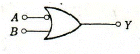
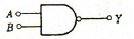
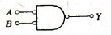
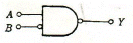
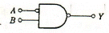
(정답률: 64%)
59. 2개의 합성 저항 R1,R2를 병렬로 접속하면 합성 저항 R은 어떻게 되는가?
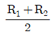
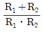
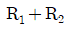
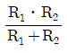
(정답률: 71%)
60. 다이오드에 역방향 전류를 흘려 사용하고 그 양단에서 일정한 전압을 얻는 것은?
- 발광 다이오드
- 제너 다이오드
- 터널 다이오드
- 가변용량 다이오드
(정답률: 77%)
4과목: 기계정비 일반
61. 송풍기의 압력 범위를 올바르게 표현한 것은?
- 0.1kgf/cm2] 이하
- 0.1~1.0kgf/cm2]
- 1.0~1.4kgf/cm2]
- 1.4kgf/cm2] 이상
(정답률: 79%)
62. 노치(notch)붙음 둥근나사 체결용으로 적합한 공구는?
- 훅스패너
- 더블오프셋렌치
- 몽키스패너
- 기어풀러
(정답률: 57%)
63. 소형(1kw이하) 3상 유도전동기에서 가장 많이 사용하는 급유의 형태는?
- 그리스 급유
- 유욕 급유
- 강제순환 급유
- 적하 급유
(정답률: 64%)
64. 구멍이 뚫린 강구를 90°회전시켜 유로를 개폐하는 밸브는?
- 콕 밸브
- 디스크 밸브
- 다이아프램 밸브
- 체크 밸브
(정답률: 76%)
65. V벨트 전동장치에서 V벨트를 선정하려 할 때 고려하지 않아도 되는 것은?
- V 벨트의 종류 및 형식
- V 벨트의 장력
- 소요벨트의 가닥수
- V 벨트 풀리의 형상과 지름
(정답률: 66%)
66. 흐르는 전류를 검출하여 전동기를 보호하는 것은?
- 전자 릴레이
- 전자 개폐기
- 과부하 계전기
- 누전 차단기
(정답률: 56%)
67. 기계가 운전 중에 가장 양호한 동심상태를 유지하기 위한 작업은?
- 분해작업
- 센터링 작업
- 끼워맞춤 작업
- 열박음 작업
(정답률: 82%)
68. 스테인리스강에서 응력부식균열(SCC) 발생요인 3요소와 가장 관련이 적은 것은?
- 재료
- 환경
- 응력
- 용접기
(정답률: 78%)
69. 두 축이 평행한 경우에 사용되는 기어가 아닌 것은?
- 스퍼기어
- 헬리컬 기어
- 내접기어
- 베벨기어
(정답률: 57%)
70. 기어 내경이 D이고 죔새가 Δd일 때 가열온도를 구하는 식은? (단, 기어의 열팽창계수는 a 이다.)
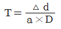
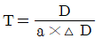
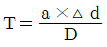
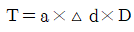
(정답률: 77%)
71. 왕복식 압축기에 대한 설명으로 맞는 것은?
- 맥동 압력이 없다.
- 대용량이다.
- 고압발생이 가능하다.
- 윤활이 쉽다.
(정답률: 69%)
72. 테이퍼핀을 밑에서 때려서 뺄 수 없을 경우에 적합한 분해 방법은?
- 테이퍼핀 머리부분에 용접을 하여 뺀다.
- 테이퍼핀 머리부분에 나사를 내어 너트를 걸어 뺀다.
- 스크류익스트랙터를 사용하여 뺀다.
- 테이퍼핀을 정으로 잘라서 뺀다.
(정답률: 74%)
73. 펌프의 공동현상(Cavitation)방지책으로 부적당한 것은?
- 비교회전도(NS)가 작은 펌프를 채택한다.
- 흡입 배관은 가능한 굵고 짧게 한다.
- 펌프의 설치위치를 가능한 높게 하여 흡입 양정을 길게한다.
- 손실수도를 작게 한다.
(정답률: 68%)
74. 기어의 치면 열화가 아닌 것은?
- 습동마모
- 소성항복
- 표면피로
- 과부하 절손
(정답률: 61%)
75. 기름펌프로 사용되는 기어 펌프의 송출량 계산식으로 옳은 것은? (단, Q:송출량[ℓ/min], h:이의 높이[mm], b:이의 폭[cm], N: 회전수[rpm], d: 피치원지름[cm])
- Q=πhN / 1000bd [ℓ/min]
- Q=100bd / πhd [ℓ/min]
- Q=πbdhN / 1000 [ℓ/min]
- Q=1000bh / πdN [ℓ/min]
(정답률: 66%)
76. 원심펌프의 이상 현상 원인이 아닌 것은?
- 스터핑박스로 공기침입
- 펌프내 공기빼기를 하였을 때
- 패킹과 주축간의 과도한 틈새
- 펌프의 회전방향이 틀릴 때
(정답률: 71%)
77. 기어 감속기의 분류 중 교쇄 축형 감속기는?
- 웜 기어
- 스퍼 기어
- 헬리컬 기어
- 스파이럴 베벨 기어
(정답률: 64%)
78. 열박음을 위해 베어링을 가열 유조에 넣고 가열할 때 몇 ℃ 이상에서 베어링의 경도가 저하되는가?
- 130℃
- 150℃
- 180℃
- 200℃
(정답률: 74%)
79. 유로방향의 수로 뷴류한 콕의 종류가 아닌 것은?
- 이방 콕
- 삼방 콕
- 사방 콕
- 오방 콕
(정답률: 81%)
80. 평행축형 감속기에 사용하지 않는 기어는?
- 스퍼 기어
- 헬리컬 기어
- 더블 헬리컬 기어
- 웜 기어
(정답률: 78%)